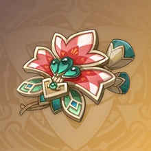

莱欧斯利
主C
副: 双暴>攻击


申鹤
辅助
副: 充能>攻击>双暴


攻击
攻击

攻击


神里绫华
主C
副: 双暴>攻击>充能


优菈
主C
副: 双暴>攻击>充能


甘雨
主C/副C
副: 双暴>精通>攻击


七七
辅助
副: 充能>攻击


埃洛伊
副C/主C
副: 双暴>攻击>充能>精通


夏洛蒂
辅助
副: 充能>攻击


治疗

菲米尼
主C
副: 双暴>攻击>充能
攻击

辅助
副: 充能>生命




莱依拉
辅助
副: 生命>充能


罗莎莉亚
辅助/副C
副: 充能>双暴>攻击


重云
副C
副: 双暴>攻击>精通


精通
迪奥娜
辅助
副: 充能>生命


治疗

凯亚
副C
副: 双暴>充能>攻击